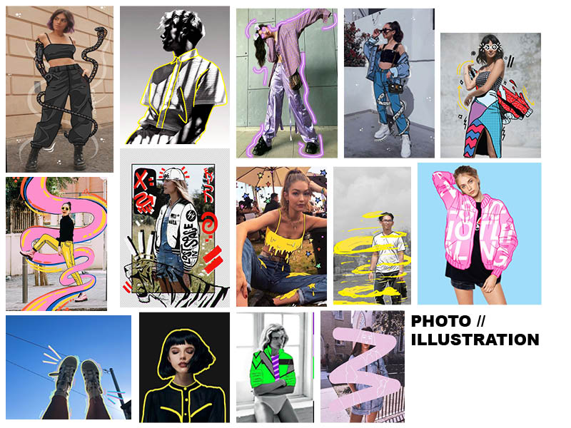
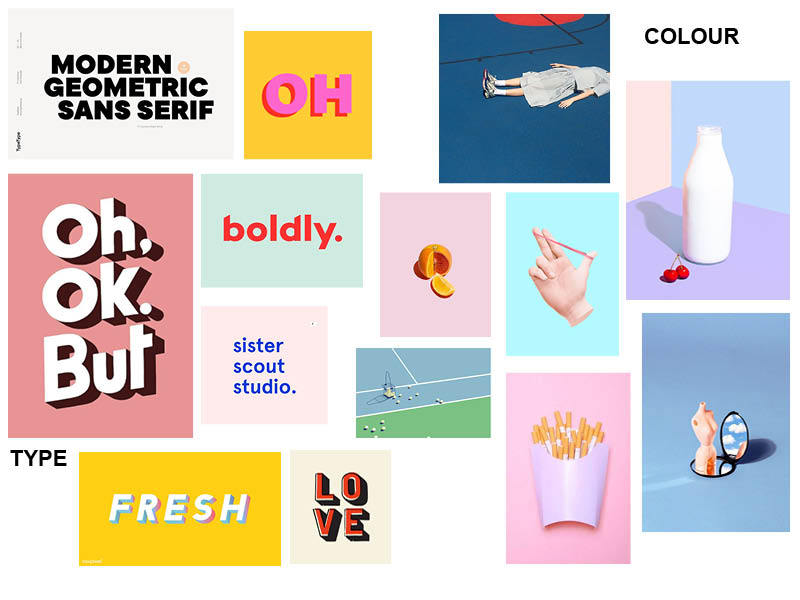
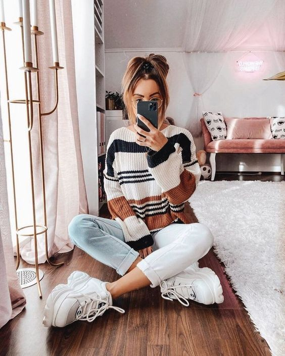
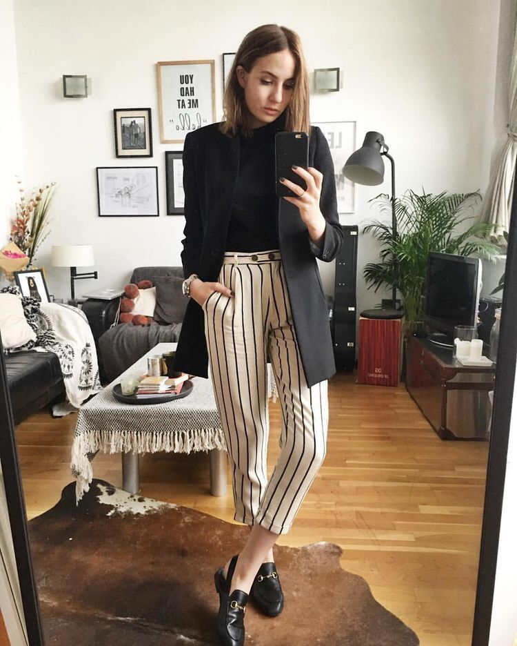
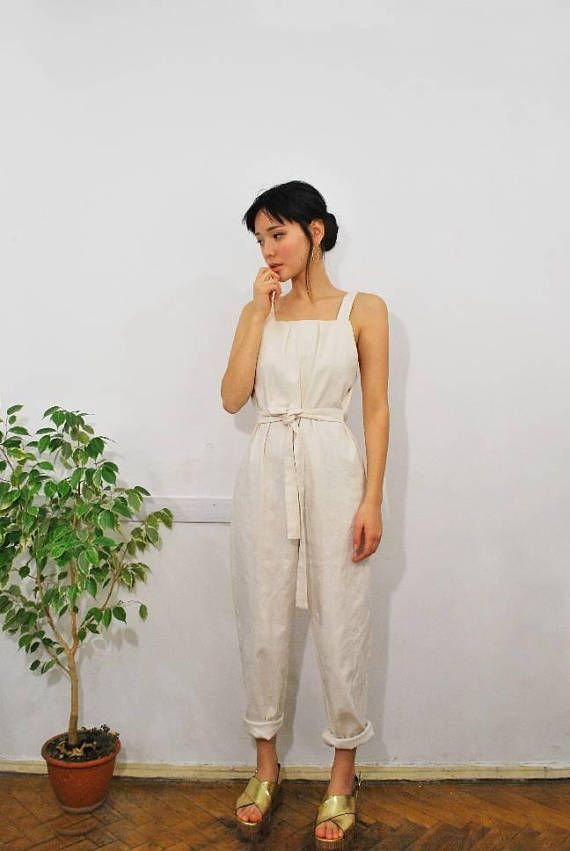
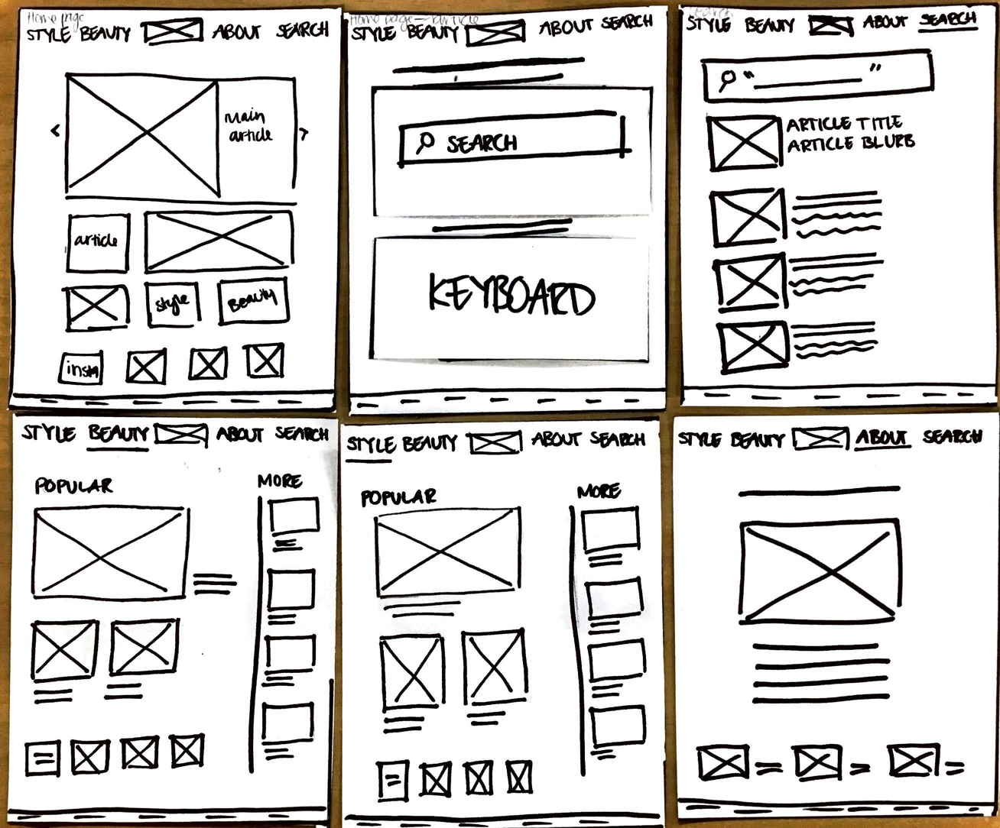

SH - FT
MOODBOARD


PERSONAS

Sadie
Sadie is 18 years old and just graduated high school. She recently graduated highschool and enjoys keeping up with popular fashion. After studying media studies in school and learning about waste in the fashion industry, Sadie has started doing more research into where her clothes are coming from and is looking for new places to shop that won't hurt her bank account or the environment. Her style is casual streetwear and she follows trends. She is looking for a part time job preferably in retail so she can wear her own clothes instead of a uniform.

Eden
Eden is 24 years old and has a job interview in the coming week for a reception position. Edens past jobs have been in the hospitality industry, and believes her clothes are too casual to wear to said interview. Eden is looking towards popular trends for inspiration, she is hoping that she can find streetwear that can be more formal as she can get more wear out of them. Eden is also concerned that if she does get the job she will need to get a few pieces for work, so any clothing she will be looking at has to be more affordable. As Eden takes the bus most days shes able to keep her options more open.

Isabelle
Isabelle is 25 years old and has just moved from America to Auckland city for her job. Being in a completely new country with little knowledge on what shops exist she wants to do some research and exploring to see what's available to her. Her style is semi formal with a lot of the pieces being vintage or sustainable. Isabelle works as a chef so already has a set uniform for work so is looking for clothes for outside of work time. She is fairly active, she walks to work most days as she doesn’t have a car. As she has just moved she is a little tight on money, so anything she does look for will have to be a reasonable price.
REFLECTIONS
WEEK ONE:
This week went pretty well, as I hadn't coded for a few months and even then I didn't do a lot of coding in previous summatives, I think I caught on pretty quickly. I do find the design of them difficult but the basics i'm more confient with. I am enjoying the classes so far and am interested in the topics we are already learning.
WEEK TWO
This week was a little bit more stressful when it came to all the design for the brnd, I found that trying to come up with ideas really quickly like the name and color were really hard and I will likely be going back and reviewing everything over the weekend. As I left it quite late I wasn't able to give myself time to code the blog to match the brand style so tha would also be something to look back on.
WEEK THREE
During the creating of the wireframes and prototpes, there were a couple things that slowed me down. One of the main being not having a clear vision for the actual layout as I hadn't done alot of research into what I specifically wanted, even when trying to follow the stylescape which should be all my final ideas. Because of this I had to go back o researching and trying to get a more clear imge in my head of want I wanted. Another thing that I was struggling with was gathering images that all had a clear theme and linked back to my website with out being over the top.
FIELD REVIEW
Field Review
STYLESCAPE
SH-FT Style Scape
SH-FT is an online fashion and beauty magazine that explores popular current trends and watches future evolving styles.
USER TESTING


PAPER AND LO FI PROTOTYPE
For the paper prototype, as soon as it was drawn out I could see a few things that were going to be changed, but I also wanted to keep in mind that the layout may look differnet on sketch than on paper as well. One of the things was how the instagram boxes I had planned on the homepage didn't fit on the style and beauty page and made it to crowded but I also wanted to try and keep it cohesive through the layout.
My main critque back from my usertesting was where are the article titles going to be on he pages as I had laid out frames for images but there was no indication what that image would be for and where it would take you. I was also missing a contact page.
When it came to the lo-fi I edited the instagram boxes to be smaller ad spread apart the page more and if I decide to add them back to the beauty and style page then they would fit in well there. The article pages I don't really like and want to go back and play around with as it just looks like any old article and I want it to link up to my other pages more, also as the website would do differnt catergories the articles can differ to each other to fit into their own catergories.
FINAL REFLECTION
In the beginning , the process was up and down whether it was due to time restraints or understanding programs. In the first 3 weeks everything went pretty smoothly, while some work wasn’t my best and could have definitely spent more time on it, the last week (4) when coding the final website started it became more stressful due to still trying to learn code and one little thing can ruin the whole code which it did the night before it was due, I still found myself wanting to put in the effort to try and make my first website look like what I had planned in my lo fi and hi fi prototypes.
Through the course of the four weeks I didn’t really feel any extreme stress until the last week. I think the stress came from trying to understand using a program I wasn’t familiar with, I found that the night before the due date I got really confused and stressed and started to think that none of the work would get done before its submit time. Looking now I know that if I had just taken a step back and looked through what I needed to do and how then it would have calmed me down a whole lot.
I enjoyed slowly learning and understanding how to code and for my website to look like my hi fi prototype makes me feel good about the end product. I think during the planning stages of the brand I could have put in more effort as even though the work was completed, I know that I could have done way more to make it look good. Overall I wish I had put in the same amount of effort I did in the last week in the first few weeks.
What I think went well was the lo fi and hi fi prototypes, it could be because I enjoy creating prototypes and can do them relatively quickly and get them to how I want to look but I think I made them quick and efficiently and looked how I wanted them. I found when creating the prototypes my design changed a lot compared to my stylescape showed so I did have to go back and change that. I also notice a significant difference between my original moodboards created and my final product which annoys me a little bit as I didn’t stick to my original ideas and that created more stress onto me.
I think for the future summatives, I need to learn to be able to take a step back when I feel stressed and just look at what I have left and understand how much time each thing will take as when I was stressing over the work I was wasting more time than saving. I also think being committed to the work from the beginning and not just putting effort in the final project.